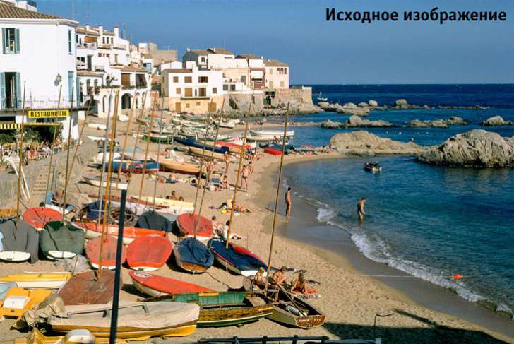
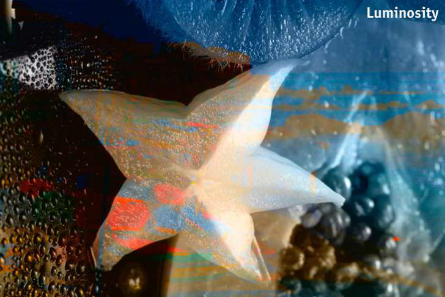
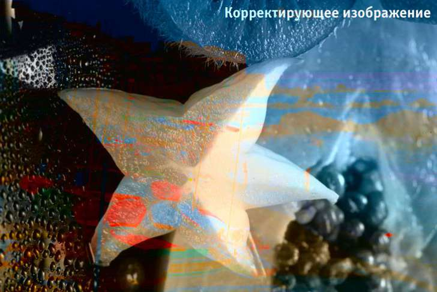

Аналог режима наложения Luminosity
mabius / 30.11.2013, 12:50
Форум:
Версия программы:
16.0.0.707
И снова здравствуйте. Собственно вопрос в названии темы. Не последний человек в мире цветокоррекции Д. Маргулис описывает в книге прием смешения каналов при последующем наложении слоев в режиме Luminosity. Luminosity - где оно в CPP или CorelPaintShop?
mabius, Внешняя ссылка :)
mabius, Вы бы чуть подробней сказали, чего там Маргулис написал или цитатку кинули из книги (или номер страницы). В СРР нет слоев, а объекты и режимы наложения находятся в докере Objects, а режим Luminosity, скорее всего будет в терминах СРР - Lightness.
To Sancho:
Спасибо за ссылку. А что такое гугль и где это в CPP? :-)
To Baryga88:
Маргулис много что написал. Целых 600 с лишним страниц:-) Но вкратце цитата "От-
крываем изображение, находим самый контрастный канал из трех, помещаем его на слой, имеющи й режим Luminosity." (а вообще о чем речь Классическое руководство по цветокоррекции. Глава 8)
Открыть не проблема), слой или объект - для меня одно и тоже, а вот Luminosity???
Переводы режимов наложения корела у меня есть. Lightness совсем совсем не то. Чтобы понять что такое Luminosity пришлось даже установить адобу. Но юзать его мне мировоззрение не позволяет)
Тут надо извратиться как-то типа как в этой моей теме Частотное разложение в CPP или Corel PaintShop Pro . Что вместо "линейного света" в продукте от адобе применить дважды "жесткий свет" в кореле.
mabius, Вы бы потрудились немного поюзать интернет в поисках ответа, что такое режим наложения Luminosity в Photoshop. Согласно правил сайта, я не могу кинуть ссылку на сайт, где это рассказывается, но через Гугл, Вы можете буквально сразу найти сайт с "Записками цветокорректора" (автор Андрей Журавлев). Там подробно все написано. Дык вот, беря пример из этого сайта, проводим аналогию между результатами наложения в Photoshop и СРР. На рис. 1 и 2 - исходные изображения, а на рис. 3 результат наложения в режиме Luminosity, полученный в Photoshop. В примере, взятом из сайта, нижнее изображение (имеется ввиду, оно будет нижним слоем (или объектом в СРР)) - исходное, а верхнее (будет вышележащим слоем (объектом)) - корректирующее.


Открываем оба изображения в СРР и проводим маленький эксперимент. Преобразуем эти изображения в Lab.
Накладываем корректирущее изображение поверх исходного (думаю тут у Вас не возникнет вопросов, как это сделать) и в докере Objects меняем режим наложения на Lightness (рис. 4).

Сравните рис. 3 и 4. Они практически идентичны.
И на последок, цитата автора: "При наложении тестовых изображений мы видим ч/б картинку фруктов с робкими следами цвета от пляжного пейзажа."
Уважаемый Baryga88. Спасибо за ваши труды. Прежде чем загрузить пользователей форума своими проблемами я всегда стараюсь найти ответ в инете. Причем и в англоязычном тоже. Теперь ближе к делу. Если есть фотошоп, то тоже можете проделать подобные действия. В СРР разбиваем на каналы. Берем к примеру зеленый. Копируем в фотошоп на новый слой устанавливаем режим Luminosity. Теперь вставляем как новый объект в докере Objects меняем режим наложения на Lightness. Сравниваем два изображения. Смотрим значения двух произвольных точек в режиме RGB: в ФШ R94G63B51 в CPP R103G70B55; 2-я точка соответственно 182 92 75 210 93 58. Как думаете разница есть? Просто я хочу что бы к примеру желтая блузка на фото была именно желтой, а не серобуромалиновой с шумом. Все же фотки делаю для себя любимого.
Да и ваша фраза "Они практически идентичны" для цветокоррекциия является ключевой. Посмотрите внимательно на правую часть обоих изображений. Там где в кореле фиолетовый - в фотошопе ближе к голубому.
После этой фразы должен начаться спор дальтоников что считать голубым и фиолетовым. Но я думаю мы его начинать не будем, т.к. у нас есть общее - мы любим корел и нелюбим ФШ. И после всего всеж таки я оставляю за собой право утверждать, что Lightness совсем совсем не то.
Baryga88 в споре рождается истина. Это я понял, когда давным-давно я и один смышленый паренек спорили что лучше ФШ или СРР. В результате он узнал как делать в ФШ те вещи, которые в СРР "на виду", ну и я кой-чему от него тоже научился. По поводу разности программ - я бы так не сказал. Разве что ФШ больше для дизайнеров. Но базовые приемы обработки, которыми и пользуются профи - они одинаковые. Кривые и Додж&Берн они и в Африке теми же и остаются. И цвета тоже. Это я к вашему "результат не будет идентичен на 100%". Если черный цвет имеет значения в RGB 0 0 0. То даже в простом паинте он таким и будет.
Кстати, я почти нарыл решение проблемы (без перевода)
Here's the steps I use:
Have your image open in Photo-Paint
Select All and Copy to Clipboard (CTRL+A and then CTRL+C))
Mask>Paint on Mask (CTRL+K)
Edit>Paste>Paste>Paste As New Selection
Mask>Paint on Mask again to exit Paint on Mask (CTRL+K)
The resulting selection is the "lightness" of the image. You can "see" the results of the lightness selection if you copy what is selected to a new layer (CTRL+Up Arrow).
Very useful for correcting slightly over-exposed photos. Copy the Lightness selection to a new layer and use Multiply Merge Mode, reduce layer opacity as needed.
Почти, то что нужно, остается поиграться прозрачностью объекта.
Ну и по поводу "изначально сказали, "есть такое-то фото, хочу получить в результате то-то, как это сделать?""
Фото не одно, а десятки, может даже сотни. Но согласен с тем, что я поставил вопрос где, а не как. Так что хоть решение вроде и есть, но тему оставляю открытой с вопросом
Как в кореловских прогах сделать аналог режима наложения Luminosity, которые есть в ФШ?
mabius! Попробуйте в PSP. По крайней мере в PSP X4 (в русской версии) есть режим наложения слоев "Осветление (Предыдущая версия)". Должно подойти к решению вашего вопроса.
Baryga88 спасибо. Уже ближе к истине. Можно даже сказать, что это то, что нужно. Вот теперь различия в зачении цветов в пределах 3 лежат. Замерено на 5 разных зонах. Кстати "Осветление (Предыдущая версия)" до сих пор есть и в X6 английской.
Если будут еще варианты, чтобы ФШ нанести "очередной удар по репутации", то как говорится "велком". Но с другой стороны тему можно считать и закрытой, ибо ответ найден.
Страницы